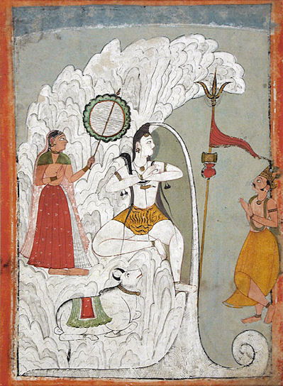
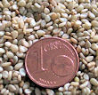

mailto:payer@payer.de
Zitierweise | cite as:
Payer, Alois <1944 - >: Sanskritkurs. -- Lösung der Übungen. -- Übungen Lektion 31 - 35. -- Fassung vom 2009-01-06. -- URL: http://www.payer.de/sanskritkurs/uebung31.htm
Erstmals hier publiziert: 2009-01-06
Überarbeitungen:
Anlass: Lehrveranstaltungen 1980 - 1984
©opyright: Dieser Text steht der Allgemeinheit zur Verfügung. Eine Verwertung in Publikationen, die über übliche Zitate hinausgeht, bedarf der ausdrücklichen Genehmigung des Verfassers
Dieser Text ist Teil der Abteilung Sanskrit von Tüpfli's Global Village Library
Falls Sie die diakritischen Zeichen nicht dargestellt bekommen, installieren Sie eine Schrift mit Diakritika wie z.B. Tahoma.
Die Devanāgarī-Zeichen sind in Unicode kodiert. Sie benötigen also eine Unicode-Devanāgarī-Schrift.
A) Übersetzen Sie folgende Sätze und lösen Sie die Komposita auf:
प्रज्ञा दुःखसम्भवं रुन्ध्यादिति बुद्धिमानार्यबुद्धमार्गेण गच्छेत् ॥१॥ दुःखस्य सम्भवम् । आर्येण बुद्धस्य / बुद्धानां मार्गेण । Damit Einsicht die Entstehung von Leid verhindert, soll ein vernünftiger Mensch den edlen Weg Buddhas / der Buddhas gehen. ... geht ein vernünftiger Mensch den edlen Weg Buddhas / der Buddhas.
शस्त्राणि शरीरमेव छिन्दन्ति जीवस्तु न म्रियत इति भगव्द्गीतायां भगवतोच्यते ॥२॥ भगवतो गीतायाम् Der Ehrwürdige sagt in der Bhagavadgītā,, dass Schwerter nur den Körper spalten, die Seele aber nicht stirbt.
बुद्ध्या युक्तो दुःखान्मुच्यते तस्मान्मोक्षमिच्छन्नरो योगेन युञ्जीत ॥३॥ Wer Einsicht hat, wird vom Leiden befreit; deshalb soll jemand, der Erlösung wünscht, sich durch Yoga anstrengen und konzentrieren.
पुत्रो जातो बन्धनं जातमिति सुगतो मत्वा कुलबन्धनं भिनत्ति । ततो भग्नबन्धो मोक्षनयन्तीं प्रज्ञामाप्तुमर्हति ॥४॥ कुलस्य बन्धनम् । भग्नो बन्धो येन सः । मोक्षं नयन्तीम् । "Ein Sohn ist mir geboren - eine Fessel ist geboren" mit diesem Gedanken zerreißt der erfolgreich den Weg durch die Wiedergeburten Gegangene die Bindung an die Familie. Nachdem er die Bande zerrissen hat kann er die zur Erlösung führende Einsicht erreichen.
समोहः स्वन्नानि च सुरूपाश्च भुङ्क्ते वीतमोहस्त्वन्नं च सम्पन्नरूपशरीरां च न लुभ्यति । स हि लोभं च क्रोधं च रुणद्धि प्रज्ञायां च युङ्क्ते ॥५॥ मोहेन सहितः । शोभनं रूपं यासां ताः । वीतो मोहो यस्य सः । सम्पन्नं रूपं यस्य स शारीरो यास्यास्ताम् । Ein Verblendester genießt gute Speisen und schöne Frauen. Wessen Verblendung verschwunden ist, begehrt keine gute Speise und keine Frau mit vollkommenem Körper. Er verhindert nämlich Gier und Hass und konzentriert sich auf die Einsicht.
B) Bilden Sie zu folgenden Wurzeln der 7. Klasse alle 3. Personen Singular und Plural, P und Ā, des Indikativ und Optativ Präsens:
१. छिद्
परस्मैपदम् आत्मनेपदम् एकवचनम् बहुवचनम् एकवचनम् बहुवचनम् लट् छिनत्ति छिन्दन्ति छिन्त्ते छिन्दते विधिलिङ् छिन्द्यात् छिन्द्युर् छिन्दीत छिन्दीरन्
२. भिद्
परस्मैपदम् आत्मनेपदम् एकवचनम् बहुवचनम् एकवचनम् बहुवचनम् लट् भिनत्ति भिन्दन्ति भिन्त्ते भिन्दते विधिलिङ् भिन्द्यात् भिन्द्युर् भिन्दीत भिन्दीरन्
३. भुज्
परस्मैपदम् आत्मनेपदम् एकवचनम् बहुवचनम् एकवचनम् बहुवचनम् लट् भुनक्ति भुञ्जन्ति भुङ्क्ते भुञ्जते विधिलिङ् भुञ्ज्यात् भुञ्ज्युर् भुञ्जीत भ्ञ्जीरन्
४. अञ्ज् (nur P)
परस्मैपदम् एकवचनम् बहुवचनम् लट् अनक्ति अञ्जन्ति विधिलिङ् अञ्ज्यात् ञ्ज्युर्
५. भञ्ज् (nur P)
परस्मैपदम् एकवचनम् बहुवचनम् लट् भनक्ति भञ्जन्ति विधिलिङ् भञ्ज्यात् भञ्ज्युर्
Abb.: कुलबन्धनम्
[Bildquelle: Carol Mitchell. --
http://www.flickr.com/photos/webethere/2171088197/. -- Zugriff am
2009-01-05. --

 Creative
commons Lizenz (Namensnennung, keine Bearbeitung)]
Creative
commons Lizenz (Namensnennung, keine Bearbeitung)]
A) Bestimmen Sie folgende Verbformen und bilden Sie die in Person, Zahl und Genus verbis entsprechenden Imperfektformen:
B) Übersetzen Sie und lösen Sie die Komposita in Sanskrit auf:
आसीत्क्षत्रिय उपपन्नो गुणैरिष्टै रूपवान् । स जनेन्द्राग्रे ऽतिष्ठत् । स देवानयजतारीनजयज्जनानपान्महापुण्यमकरोत् । तस्मान्मृत्वा देवलोके पुनर्भवमलभत ॥१॥ जनस्येन्द्रस्याग्रे । महत्पुण्यम् । देवानां लोके । Es war einmal ein Fürst, der alle wünschenswerten Vorzüge hatte, von schöner Gestalt. Er stach unter allen Menschenfürsten hervor. Er opferte den Göttern, besiegte die Feinde, hütete das Volk und tat Verdienstvolles; deshalb wurde er nach seinem Tod in einer Götterwelt wiedergeboren.
ब्राह्मणो महानगरे ऽवसत् । स पुत्रमागमय्यावक् । ब्राह्मणपुत्रो वेदं गुरावधीयीतेति । तच्छ्रुत्वा स पुत्रो ऽध्ययनाय गुरुमैत् । गुरुगृहे प्रविश्य गुरुमुपातिष्ठद्गुरुश्च तं पुत्रम् ब्राह्मणमपृच्छत् । ततस्तेन पुत्रेणान्नमादयत् ॥२॥ ब्राह्मणस्य पुत्रः । गुरोर्गृहे । Ein Brahmane wohnte in einer Großstadt. Es ließ seinen Sohn kommen und sprach: "Ein Brahmanensohn soll den Veda bei einem Meister studieren." Auf diese Worte hin ging der Sohn zu einem Meister, um zu studieren. Er trat ins Haus des Meisters und trat ehrfürchtig vor den Meister. Der Meister erkundigte sich nach dem Brahmanen. Dann gab er jenem Sohn Speise zu essen.
राम आचर्यमुपसंगम्य वचनमब्रवीत् ॥३॥ Rāma ging zum Lehrer uns sprach die Worte.
ब्राह्मणा वेदमध्यैयत चाध्यापयंश्च देवांश्चायजन्नयजन्त च क्षत्रियाः श्रुतिमध्यैयत जनानरक्षन्महीमभुञ्जन्देवानयजन्त वैश्या वेदमध्यैयत देवानयजन्ताक्रीणन्व्यक्रीणत च द्विजदासास्तु शूद्रा आसन् ॥४॥ द्विजानां दासाः । Brahmanen haben den Veda studiert und gelehrt, den Götter als Opferherren und in fremdem Auftrag geopfert. Kṣatriyas haben den Veda studiert, das Volk behütet, die Erde genossen und den Göttern als Opferherren geopfert. Vaiśyas haben den Veda studiert, den Göttern als Opferherren geopfert, gekauft und verkauft. Śūdras aber waren Leibeigene der Zweimalgeborenen.
बुद्धपुत्राः सत्यमजानन्दुःखमरुन्धन्मोक्षं प्राप्नुवन् । बुद्धपुत्र इति बुद्धमार्गभिक्षुरुच्यते ॥५॥ बुद्धस्य पुत्राः । Söhne Buddhas haben die Wahrheit erkennt, das Leiden zum Stillstand gebracht und die Erlösung erreicht.
Abb.: सम्पन्नरूपा
[Bildquelle: James Crowley. --
http://www.flickr.com/photos/james_crowley/2141684597/. -- Zugriff am
2009-01-05. --

 Creative
Commons Lizenz (Namensnennung, keine kommerzielle Nutzung)]
Creative
Commons Lizenz (Namensnennung, keine kommerzielle Nutzung)]
Anmerkung: ursprünglich wurde dieser an der Universität Tübingen jeweils im Wintersemester gehalten. Bei Lektion 32 begannen die zweiwöchigen Weihnachtsferien.
!!!Lösungen ohne Anspruch auf Vollständigkeit!!!
A) Bestimmen und übersetzen Sie folgende Wörter:
एषिता Nom.sg.f.Kaus.PPP zu iṣ 6P "die wünschen gemachte"
जाताम् Akk.sg.f.PPP zu jan 4Ā "die geborene"
प्रतिमासु Lok.pl. zu pratimā f. "bei den Bildnissen"
B) Übung zum Sandhi: Setzen Sie in folgenden Sätzen die Wörter in den Klammern ein. Achten Sie dabei besonders auf den Sandhi:
१. रामो ग्रामात् ... (द्वितीया विभक्तिः) ... गच्छति । (नगर । आर्यग्राम । महानगर । शत्रुग्राम । जयनगर । लोकेश्वरनगर । कविगृह )
... ग्रामान्नगरं ... । ... ग्रामादार्यग्रामं ... । ... ग्रामान्महानगरं ... । ... ग्रामाच्शत्र्र्ग्रामं ... । ... ग्रामाच्छत्रुग्रामं ... । ... ग्रामाज्जयनगरं ... । ... ग्रामाल्लोकेश्वरनगरं ... । ... ग्रामाट्कविगृहं ... ॥
२. जयन् ... (प्रथमा विभक्तिः) ...अरीन्हन्ति । (इन्द्रशत्रु । शत्रु । जितशत्रुक्षत्रिय । लोकेश्वर । तद्गुणशूर । देवता)
जयन्निन्द्रशत्रुररीन्हन्ति ।
जयञ्शत्रुररीन्हन्ति । जयञ्छत्रुररीन्हन्ति ।
जयञ्जितशत्रुक्षत्रियो ऽरीन्हन्ति ।
जयंल्लोकेश्वरो ऽरीन्हन्ति ।
जयंस्तद्गुणशूरो ऽरीन्हन्ति ।
जयन्ती देवतारीन्हन्ति ॥
३. न हि पुण्यवन्तस्ते ... (प्रथमा विभक्तिः) ... । (अरि । आर्यशत्रु)
... ते ऽरयः । ... त आर्यशत्रवः ।
४. देवता ... (तृतीया विभक्तिः) ... आद्यते । (ऋषि (एकवचने बहुवचने च) । इन्द्रदेवी)
देवतर्षिणाद्यते । देवतर्षिभिराद्यते । देवतेन्द्रदेव्याद्यते ॥
५.ब्राह्मणस् ... (सप्तमी विभक्तिरेकवचने बहुवचने च) ... एति । (नगर)
ब्राह्मणो नगर एति । ब्राह्मणो नगरयेति ।
ब्राह्मणो नगरेष्वेति ॥
६. रामो गृहे ... । (आस् । इ । वस्)
रामो गृह आस्ते । रामो गृहयास्ते ।
रामो गृह एति । गृहयेति ।
रामो गृहे वसति ॥
७. शूरेण ... (प्रथमा विभक्तिः) ... जीयते । (अरि । इन्द्रशत्रु । उक्तानृतनर । एष नर)
शूरेणरिर्जीयते । शूरेणेन्द्रशत्रुर्जीयते । शूरेणोकानृतनरो जीयते । शूरेणैष नरो जीयते ॥
८. कविना... (प्रथमा विभक्तिः) ... स्तूयन्ते । (आर्यदेव । इन्द्रादिदेव)
कविनार्यदेवाः स्तूयन्ते । कविनेन्द्रादिदेवाः स्तूयन्ते ॥
९. रामस् ... (द्वितीया विभक्तिः) ... गच्छति । (कवि । गृह । आर्यग्राम । अरिनगर । सुखता । तन्नगर । शूद्रग्राम । चन्द्रकीर्ति । ट्युबिङ्गन्नगर)
रामः कविं गच्छति । रामो गृहं गच्छति । राम आर्यग्रामं गच्छति । रामो ऽरिनगरं गच्छति । रामः सुखतां गच्छति । रामस्तन्नगरं गच्छति । रामः शूद्रग्रामं गच्छति । रामश्चन्द्रकीर्तिं गच्छति । राम्ष्ट्युबिङ्गनगरं गच्छति (in die Stadt Tübingen) ॥
Abb.: किम्यं रथो बालान्सुखतां वहति ।
[Bildquelle: Peter Davis. --
http://www.flickr.com/photos/pediddle/327856625/. -- Zugriff am 2009-01-05.
--


 Creative
Commons Lizenz (Namensnennung, keine kommerzielle Nutzung, keine Bearbeitung)]
Creative
Commons Lizenz (Namensnennung, keine kommerzielle Nutzung, keine Bearbeitung)]
C) Übersetzen Sie ins Sanskrit:
1.) Nachdem der Sohn qeboren ist , schickt die Brahmanin einen Diener zum Brahmanen. Der Brahmane lässt diesen Diener ins Haus eintreten und fragt dann nach dem Sohn. Der Diener sagt, dass der Sohn wohlauf ist. Als er das qehört hat, wird der Brahmane glücklich.
पुत्रे जाते ब्राह्मणी दासं ब्राह्मणं गमयति । ब्राह्मणस्तं दासं गृहं प्रवेश्य पुत्रं पृच्छति । सुभगः पुत्र इति दासो वक्ति । तच्छ्रुत्वा ब्राह्मणो सुखतां गच्छति ॥१॥
2.) Der Heilige hat das (ihm) getane Böse ertragen.
साधुना कृतं पापं सोढम् ॥२॥
3.) Sittlichkeit ist des Mannes Zier.
शीलं नरस्य भूषणम् ॥३॥
4.) Die mächtigen Krieger sind ins Brahmanendorf gegangen.
बलवद्योधा ब्राह्मणग्रामं गताः ॥४॥
5.) Das Mädchen weint.
बाला रोदिति ॥५॥
6.) Es gibt keine Krankheit gleich wie die Wohllust, es qibt keinen Feind wie die Verwirrung, es gibt kein Feuer wie den Zorn, es gibt kein Glück wie die Erkenntnis.
नास्ति कामसमो व्याधिर्नास्ति मोहसमो रिपुः ।
नास्ति क्रोधसमो वह्निर्नास्ति ज्ञानसमं सुखम् ॥६॥
7.) Ein Mann, den die Göttin behütet, ist glücklich.
यं नरं देवी रक्षति स सुखवान् ॥७॥
8.) Mit welchem Wind auch immer eine Wolke Wasser (वारि n.) lässt, mit dem Wind bewegt ein Gelehrter seinen Schirm.
येन येन च वातेन वारिदो वारिं मुञ्चति ।
तेन तेन च वातेन छत्रं वहति पण्डितः ॥८॥
9.) Es qibt keine fruchtbringenden Tätigkeiten von Ständen, Lebensstadien usw.
नैव सन्ति वर्णाश्रमादीनां फलदायिकाः क्रियाः ॥९॥
10) Der Kreislauf der Wiedergeburten hat keinen Anfang.
अनादिकालिकः संसारः ॥१०॥
11) Es ist Zeit, sich dem Essen zu widmen.
कालो भोजनं सेवितुम् ॥११॥
12) Willkommen der Königin.
स्वागतं देव्यै ॥१२॥
13) Um der Himmel Willen tun die Menschen Verdienstvolles.
स्वर्गेभ्यो नराः पुण्यं कुर्वते ॥१३॥
14) Ein Mann, der aus Überheblichkeit, Gier, Zorn, oder Furcht ein Gerichtsurteil fälschlich spricht, qeht in eine Hölle.
मानाद्वा यदि वा लोभात्क्रोधाद्वा यदि वा भयाट् ।
यो न्यायमन्यथा ब्रूते स याति नरकं नरः ॥१४॥
15) Rāma ging auf Anweisung der Lehrers aus dem Dorf in die Stadt, betrat das Haus des heiligen Mannes, trat ehrerbietig vor den Heiligen und spricht: "Lass ab vom Zorn!"
गुर्वादेशाद्रामो ग्रामान्नगरं गत्वा साधुगृहं प्रविश्य साधुमुपस्थायालं क्रोधेनेति वक्ति ॥१५।\
16) Immer (sei seine) Verbindung mit solchen, die in den Wissenschaften gewachsen sind, auf dass seine Erziehunq/qutes Verhalten wachse. (Dies) weil die Erziehunq/gutes Verhalten als Wurzel dieses (die Verbindung mit solchen) hat.
नित्यो विद्यावृद्धसंयोगो विनयवृद्ध्यर्थम् । तन्मूलत्वाद्विनयस्य ॥१६॥
17) Während der Lehrer steht, darf der Knabe nicht sitzen.
गुरौ तिष्ठति बाल आसितुम् नार्हति ॥१७॥
18) Es gibt keine bessere Zuflucht als Rāma.
रामान्नास्ति परायणं प्रतरम् ॥१८॥
19) Viṣṇumitra lässt den Rāma den Govinda ins Dorf schicken.
विष्णुमित्रो रामेण गोविन्दं ग्रामं गमयति ॥१९॥
20) Er lässt den Devadatta Reis kochen.
स देवदत्तेनौदनं पाचयति ॥२०॥
21) Dharma der Arier ist, dass junge Brahmanen die Abschnitte des Veda und der Smṛti immer wieder studieren.
ब्राह्मणपुत्रा वेदाध्यायांश्च स्मृत्यध्यायांश्च पुनः पुनरधीयीरन्नित्यार्यधर्मः ॥२१॥
22) Der Lehrer lehrte die Knaben den Veda und ging dann ins Haus.
गुरुर्बालान्वेदमधाप्य गृहं गतः ॥२२॥
23) Welches Amulett hat das Mädchen beschützt?
कया रक्षिकया बाला रक्षिता ॥२३॥
24) Wahrheit ist die Leuchte der Welt.
सत्यं लोकस्य दीपः ॥२४॥
25) Wem gehören diese Häuser?
केषामिमानि गृहाणि ॥२५॥
26) Dharma aller ist: Nichtverletzen, Wahrheit, Reinheit, Neidlosiqkeit, Nicht-Boshaftigkeit und Geduld.
सर्वेषां धर्मो ऽहिंसा सत्यं शौचमनसूयानृशंस्यं क्षमा च ॥२६॥
27) Die Kṣatriyas, die die Feinde besiegt haben, sitzen im Haus.
जितशत्रुक्षत्रिया गृह आसते ॥२७॥
28) Die ist eine (wirkliche) Gattin, die Liebes spricht; der aber ist ein (echter) Sohn, der lebt. Der lebt, der gute Eigenschaften besitzt; der lebt, der Dharma besitzt.
सा भार्या या प्रियं ब्रूते
स पुत्रो यस्तु जीवति ।
स जीवति गुणो यस्य
धर्मो यस्य स जीवति ॥२८॥
29) Der Götterfürst besiegt die Nichtarier, die Feinde des Indra sind. (Passiv)
इन्द्रशत्र्वनार्या देवेन्द्रेण जीयन्ते ॥२९॥
30) Yoga der Tat sind Askese (tapas n.), (Veda)rezitation, Dienstfertigkeit qegenüber dem HERRN. Er dient der Entfaltung der meditativen Versenkung und der Schwächung der kleśas.
तपःस्वाध्यायेश्वरप्रणिधानानि क्रियायोगः । समाधिभावनार्थः क्लेशतनूकरनार्थश्च ॥३०॥
31) Nahrungsaufnahme, Schlaf, Furcht und Paarung: dies ist eine Gemeinsamkeit der Menschen mit den Tieren. Im Dharma (liegt) nämlich deren hinzukommende Besonderheit. Vom Dharma verlassen sind sie den Tieren (Instr.) gleich.
आहारनिद्राभयमैथुनं च सामान्यमेतत्पशुभिर्नराणाम् ।
धर्मो हि तेषामधिको विशेषो धमेण हीनाः पशुभिः समानाः ॥३१॥
32) Die Leute werden geboren, um zu sterben.
मरणाय जना जायन्ते ॥३२॥
33) Höllen sind wegen des Bösen. Das Böse hat als Ursprung Armut. Armut entsteht durch Nicht-Geben.
भवन्ति नरकाः पापात्पापं दारिद्र्यसंभवम् ।
दारिद्र्यमप्रदानेन ॥३३॥
34) Es ist Dharma der Kṣatriyas, dass die Kṣatriyas die Leute vor den Feinden schützen.
क्षत्रिया जनाञ्छत्रुभ्यो रक्षितुमर्हन्तीति क्षत्रियधर्मः ॥३४॥
35) Deshalb haben die drei (tisras) Wissenschaften das Regiment als Wurzel. Das Reqiment , das Erziehunq/qutes Verhalten als Wurzel hat, bringt den Lebewesen (प्राणभृत्) Gewinn und sicheren Besitz.
तस्मद्दण्डमूलास्तिस्रो विद्याः । विनयमूलो दण्डः प्राणभृतां योगक्षेमावहः ॥३५॥
36) Böse Leute hören nicht (zu), wenn der Lehrer über den Dharma spricht.
धर्मं वदति गुरौ दुर्जना न शृण्वन्ति ॥३६॥
37) Diesem Rāma sei Verehrunq!
रामाय तस्मै नमः ॥३७॥
38) Der hehre Hari ist mein Weq/Ziel, der (seine) Feinde in einen Himmel schickte, die Seinen den Sinn des Veda wissen ließ, den Göttern Unsterblichkeitsspeise zu essen qab, den Schöpfer (विधि) den Veda lehrte, die Erde im Wasser (fest )setzte.
शत्रूनगमयत्स्वर्गं वेदार्थं स्वानवेदयत् ।
आशयच्चामृतं देवान्वेदमध्यापयद्विधिम् ।
आसयत्सलिले पृथ्वीं यः स मे श्रीहरिर्गतिः ॥३८॥
39) Viṣṇu zeiqt sich seinen Gläubiqen.
विष्णुर्भक्तान्दर्शयते ॥३९॥
40) Ein Reqiment, das nicht ausgeübt wird, bewirkt die Norm der Fische.
अप्रणीतो दण्डो मात्स्यन्यायमुद्भावयति ॥४०।
41) Wer Reichtümer besitzt, der hat Freunde: wer Reichtümer besitzt, der hat Verwandte; wer Reichtümer besitzt, der ist ein Mann (पुमान् Nom.sq.) in der Welt; wer Reichtümer besitzt, der ist nämlich ein Gelehrter.
यस्यार्थास्तस्य मित्राणि यस्यार्थास्तस्य बान्धवाः ।
यस्यार्थाः स पुमांल्लोके यस्यार्थाः स हि पण्डितः ॥४१॥
42) Das Feuer, das den Verstorbenen verbrennt, verbrennt auch die qute Witwe.
मृतम् दहन्नग्निः सतीमपि दहति ॥४२॥
43) Die Dienerin des Brahmanen hat die Speise qekocht und isst sie (nun).
अन्नं पक्त्वा ब्राह्मणदास्यत्ति ॥४३॥
44) Jetzt reicht's !
अलं क्षमया ॥४४॥
45) Diese Frucht reicht ihm zum Essen.
इदं फलमलं तस्य खादनाय ॥४५॥
46) Der innerste Tempelschrein ist ein Haus für das Bildnis des Gottes.
देवप्रतिमायै गृहं गर्भगृहम् ॥४६॥
47) Ein Dieb wird vom Diebstahl befreit durch Strafe oder durch Freilassung, Wenn aber der König (राजा Nom.sg.) den (Dieb) nicht bestraft, erhält er die Schuld des Diebes.
शासनाद्वा विमोक्षाद्वा स्तेनः स्तेयाfविमुच्यते ।
अशासित्वा तु तं राजा स्तेनस्याप्नोति किल्बिषम् ॥४७॥
48) Weil er einen Fehler beim Opfer gemacht hat, ist der Brahmane nicht würdig, Reichtümer zu empfangen.
कृतयज्ञदोषत्वाद्ब्राह्मणो धनं लब्धुं नार्हति ॥४८॥
49) Wenn die Initiationszeremonie stattqefunden hat, soll er sich den Veda und die Philosophie von Gelehrten, die Ökonomie von Departementsvorstehern aneignen (उपयुज्).
वृत्तोपनयनस्त्रयीमान्वीक्षिकीं च शिष्टेभ्यो वार्त्तामध्यक्षेभ्य् उपयुञ्जीत ॥४९॥
50) Vaiśyadharma ist, dass die Vaiśyas von Kauf und Verkauf leben. Da es so ist, kaufen und verkaufen die Vaiśyasöhne.
क्रयेण च विक्रयेण च वैश्या जीवेयुरिति वैश्यधर्मः । एवं सति वैश्यपुत्राः क्रीणन्ति विक्रीणते च ॥५०॥
51) Man soll die Wahrheit saqen, man soll Anqenehmes sagen; man soll nicht eine unanqenehrne Wahrheit saqen und man soll auch keine unangenehme Unwahrheit saqen. Dies ist der ewige Dharma.
सत्यं ब्रूयात्प्रियं ब्रूयान्न ब्रूयात्सत्यमप्रियम् ।
प्रियं च नानृतं ब्रूयादेष धर्मः सनातनः ॥५१॥
52) Auf Wiedersehen!
पुनर्दर्शनाय ॥५२॥
Abb.: पुनर्दर्शनाय
Gateway of India = भारताचे
प्रवेशद्वार, मुंबई
[Bildquelle: Rhaessner / Wikipedia. GNU FDLicense]
Übersetzen und bestimmen Sie folgende Wortformen:
शूद्रायै Dat.sg. zu śūdrā f. "für die Śūdrafrau"

Abb.: श्रीगङ्गाधराय नमः
um 1740
[Bildquelle: Wikipedia. Public domain]
एकदा कश्चिद्वृद्धो ग्रामान्तरं गच्छन्पथि श्रान्तो ऽभवत् । अतः स विश्रमाय पार्श्वस्थितस्य चूततरोर्मूलमगच्छत् ॥ तस्मिन्वृक्षे पचेलिमानि फलान्यवर्तन्त । वृद्धस्य तेषु स्पृहा जाता । परं स वृक्षमारुह्य तानि ग्रहीतुं नाशक्नोत् ॥ दिष्ट्या तस्मिन् तरौ केचिद्वानराः फलानि खादन्तः स्थिताः । तानवलोक्य वृद्धः प्रहर्षं गतः । स किमकरोत् । स कतिचिदुपलानादाय वानरांल्लक्ष्यीकृत्य प्राक्षिपत् । वानराः कुपिताः कानिचित्फलान्यवचित्य वृद्धं प्रति प्राक्षिपन् । वृद्धः सहर्षं तान्यादाय स्वाभीष्टदेशं गतः ॥ अहो वृद्धस्य कौशलम् ॥ (aus: संस्कृतबालादर्श)
Eins ging ein Greis in ein anderes Dorf und war unterwegs müde. Um sich auszuruhen ging er an den Fuß eines Mangobaums, der auf der Seite stand. Auf diesem Baum waren reife Früchte. Der Greis bekam Lust auf sie. Aber er konnte nicht auf den Baum steigen und sie pflücken. Zum Glück waren auf dem Baum einige Affen, die Früchte fraßen. Als der Greis diese sah, freute er sich. Was tat er? Er nahm einige Steine zielte auf die Affen und warf sie. Die Affen waren wütend und pflückten einige Früchte und warfen sie auf den Greis. Greis nahm freudig die Früchte und ging dorthin, wo er wollte. Großartig! die List des Greises!
Erklärungen:
पथि Lok. sg. zu पथ् m. "Weg" (unregelmäßige Deklination)
लक्ष्यीकृ च्विऽ-षुffइx अन् लक्स्य + कृ : etwas zum लक्ष्य machen, was vorher nicht लक्ष्य war
आदाय Absolutiv zu आ-दा (3. Präsensklasse) "nehmen"
Abb.: वानरः कुपितः
Ranakpur
[Bildquelle: SkilliShots. --
http://www.flickr.com/photos/skillicorn/3028654887/. -- Zugriff am
2009-01-05. --

 Creative
Commons Lizenz (Namensnennung, keine Bearbeitung)]
Creative
Commons Lizenz (Namensnennung, keine Bearbeitung)]
A) Setzen Sie in folgendem Satzmuster die entsprechenden Formen der Wörter in der Klammer ein:
रामस् ... (चतुर्थ्येकवचने बहुवचने च) ... अन्नं ददाति । (भिक्षु । अग्नि । शूद्रा । गुनवान्पुत्र । देवान्स्तुवन्कवि । ब्राह्मणी । महान्साधु । धेनु)
रामो भिक्षवे ऽन्नं ददाति । रामो भिक्षुभ्यो ऽन्नं ददाति ।
रामो ऽग्नये ऽन्नं ददाति । रामो ऽग्निभ्यो ऽन्नं ददाति ।
रामः शूद्रायायन्नं ददाति । रामः शूद्राया अन्नं ददाति । रामः शूद्राभ्यो ऽन्नं ददाति ।
रामो गुणवते पुत्रायान्नं ददाति । रामो गुनवद्भ्यः पुत्रेभ्यो ऽन्नं ददाति ।
रामो देवान्स्तुवते कवये ऽन्नं ददाति । रामो देवान्स्तुवद्भ्यः कविभ्यो ऽन्नं ददाति ।
रामो ब्राह्मण्यायन्नं ददाति । रामो ब्राह्मण्या अन्नं ददाति । रामो ब्राह्मणीभ्यो ऽन्नं ददाति ।
रामो महते साधवे ऽन्नं ददाति । रामो महद्भ्यः साधुभ्यो ऽन्नं ददाति ।
रामो धेनवे ऽन्नं ददाति । रामो धेन्वायन्नं ददाति । रामो धेन्वा अन्नं ददाति । रामो धेनुभ्यो ऽन्नं ददाति ॥
B) Setzen Sie die entsprechenden Formen der in Klammern angegebenen Verben im Indikativ Präsens, Imperfekt und Optativ ein:
ब्राह्मनो घृतमग्नौ ... (हु) ॥१॥
ब्राह्मणो घृतमग्नौ जुहोति । ब्राह्मणो घृतमग्नावजुहोत् । ब्राह्मणो धृतं अग्ना अजुहोत् । ब्राह्मणो घृतमग्नौ जुहुयात् ॥१॥
बुद्धगता भयान्न ... (भी) ॥२॥
बुद्धगता भयान्न बिभ्यति । बुद्धगता भयान्नाबिभयुः । बुद्धगता भयान्न बिभीयुः ॥२॥
सुगतः कुलम् ... (हा) ॥३॥
सुगतः कुलं जहाति । सुगतः कुलमजहात् । सुगतः कुलं जह्यात् ॥३॥
दुर्जना भिक्षुभ्यो ऽन्नं न ... (दा) ॥४॥
दुर्जना भिक्षुभ्यो ऽन्नं न ददति । दुर्जना भिक्षुभ्यो ऽन्नं नाददुः । दुर्जना भिक्षुभ्यो ऽन्नं न दयुः ॥४॥
साधुः कृष्णे मतिम् ... (धा + सम् + आ) ॥५॥
साधुः कृष्णे मतिं समाधत्ते । साधुः कृष्णे मतिं समादधाति । साधुः कृष्णे मतिं समाधत्त । साधुः कृष्णे मतिं समादधात् । साधुः कृष्णे मतिं समादधीत । साधुः कृष्णे मतिं समादध्यात् ॥५॥
ईश्वरो लोकान् ... जनास्तु न ... (मा) ॥६॥
ईश्वरो लोकान्मिमीते जनास्तु न मिमते । ईश्वरो लोकानमिमीत जनास्तु नामिमत । ईश्वरो लोकानअमिमत जनास्तु नामिमीरन् ॥६॥
दासा भारान् ... (भृ) ॥७॥
दासा भारान्बिभर्ति । दासा भारानबिभः । दासा भारान्बिभृयात् । दासा भारान्बिभ्रति । दासा भारानबिभरुः । दासा भारान्बिभृयुः ॥७॥
ब्राह्मणी पात्रं जलेन ... (पॄ) ॥८॥
ब्राह्मणी पात्रं जलेन पिपर्ति । ब्राह्मणी पात्रं जलेनापिपः । ब्राह्मणी पात्रं जलेन पिपूर्यात् ॥८॥
C) Übersetzen Sie und wandeln Sie Singularsätze in Pluralsätze um und umgekehrt:
योगयुक्तो मतिं दुःखमक्षनयन्त्यां प्रज्ञायां समाधत्ते ॥१॥
Ein Yogin konzentriert seinen Geist auf die Einsicht, die zur Befreiung vom Leiden führt.
योगयुक्ता ... समादधते ॥१॥
यो भिक्षवे दानानि द्द्यात्सो ऽपि दानपुण्यमाददीत ॥२॥
Wer einem Mönch Gaben schenkt, der erhält das Verdienst seines Gebens.
ये ... दद्युस्ते ... आददीरन् ॥२॥
ब्राह्मणा भारं न बिभ्रतीति ब्राह्मणदासो भारं गृहमबिभः ॥३॥
Da Brahmanen keine Last tragen, trug der Diener des Brahmanen die Last nach Hause.
ब्राह्म्णो भारं न बिभर्तीति ब्राह्मणदासा भारं गृहमबिभरुः ॥३॥
क्षत्रियशूरः पुत्रमादाय योद्धुं कुलमजहात् । स युद्धे शत्रुहतत्वाच्छरीरं हीत्वा पनर्भवमैत् ॥४॥
Der Kṣatriyaheld verließ mit seinem Sohn die Familie, um zu kämpfen. Da er im Kampf vom Feind getötet wurde, verließ er seinen Körper und wurde wiedergeboren.
क्षत्रियशूराः पुत्रानादाय योद्धुं कुलान्यजहुः । ते युद्धे शत्रुहत्वाच्छरीराणि हीत्वा पुनर्भवमायन् ॥४॥
देवदत्तमपि सुखं दुःखमोक्षेष्टिं न पिपर्ति । सेष्टिः प्रज्ञयैव सम्पूर्यते ॥५॥
Selbst von den Göttern geschenktes Glück erfüllt den Wunsch nach Erlösung vom leiden nicht. Dieser Wunsch wird nur durch erlösende Einsicht voll erfüllt.
देवदत्तान्यपि सुखानि दुःखमोक्षेष्तीर्न पिपुरति । ता इष्टयः प्रज्ञयैव सम्पूर्यन्ते ॥५॥
यः साधुर्भूतेभ्यो ऽभयं ददाति तस्माद्भूतानि न बिभ्यति स च तेभ्यो न बिभेति ॥६॥
Vor einem Heiligen, der den Wesen Furchtlosigkeit schenkt, fürchten sich die Wesen nicht und er fürchtet sich nicht vor ihnen.
ये साधवो भूताय ऽभयं ददति तेभ्यो तन्न बिभेति ते च तस्मान्न बिभ्यति ॥६॥
मितमतयो नरकभयाद्स्वर्गलोभाच्च पुण्यं कुर्वन्ति पापं च जहति । अमितप्रज्ञाबुद्धा हि नरकेभ्यो न बिभीयुः स्वर्गांश्च न लुभ्येयुः । ते भयं च लोभं चारुन्धन् ॥७॥
Geistig Beschränkte tun Verdienstvolles und unterlassen Böses, weil sie sich vor Höllen fürchten und Himmel begehren. Solche, die zur unbegrenzten Einsicht erwacht sind, fürchten sich nicht vor Höllen und begehren keine Himmel. Sie haben Furcht und Begier beendet.
मितमतिर्नरकभयात्स्वर्गलोभाच्च पुण्यं करोति पापं च जहाति । अमितप्रज्ञाबुद्धो हि नरकेभ्यो न बिभीयात्स्वर्गांश्च न लुभ्येत् । स भयं च लोभं चारुणत् । ... बिभियात् ... ॥७॥
Abb.: मितमतयो
नरकभयाद्स्वर्गलोभाच्च पुण्यं कुर्वन्ति
पापं च जहति
Wat Saen Suk = วัดแสนสุข, Bang Saen = บางแสน, Thailand
[Bildquelle: Michael Sarver. --
http://www.flickr.com/photos/michaelsarver/72315961/. -- Zugriff am
2009-01-06. --


 Creative Commons Lizenz (Namensnennung, keine kommerzielle Nutzung,
share alike)]
Creative Commons Lizenz (Namensnennung, keine kommerzielle Nutzung,
share alike)]
Abb.: मितमतयो
नरकभयाद्स्वर्गलोभाच्च पुण्यं कुर्वन्ति
पापं च जहति
Wat Saen Suk = วัดแสนสุข, Bang Saen = บางแสน, Thailand
[Bildquelle: Michael Sarver. --
http://www.flickr.com/photos/michaelsarver/72315946/in/set-420804/. -- Zugriff am
2009-01-06. --


 Creative Commons Lizenz (Namensnennung, keine kommerzielle Nutzung,
share alike)]
Creative Commons Lizenz (Namensnennung, keine kommerzielle Nutzung,
share alike)]
Bilden Sie zu folgenden Verbformen die in Person, Zahl und Genus entprechenden Perfektformen:
Übersetzen Sie folgenden Text aus dem पद्मपुराण über Gaben an Brahmanen:
क्षितिं सशस्यां यो दद्याद्ब्राह्मणाय द्विजोत्तम ।
विष्णुलोके सुखं भुङ्क्ते यावदिन्द्राश्चतुर्दश ॥१॥
सप्तद्वीपां महीं दत्त्वा यत्पुण्यं प्राप्यते द्विज ।
तत्पुण्यं प्राप्नुयान्मर्त्यो धेनुं यच्छन्द्विजातये ॥२॥
तिलप्रमाणं स्वर्णं यो ब्राह्मणाय प्रयच्छति ।
हरिनिकेतनं याति युक्तं कोटिकुलैरपि ॥३॥
सालङ्कारां द्विजश्रेष्ठ कन्यां यच्छति यो नरः ।
स गच्छेद्ब्रह्मसदनं पुनर्जन्म न विद्यते ॥४॥
अन्नं वारि द्विजश्रेष्ठ येन दत्तम् महीतले ।
तेन दत्तानि दानानि सर्वाणि च द्विजर्षभ ॥५॥
Bester der Zweimalgeborenen! Wer einem Brahmanen die Erde samt ihren Feldfrüchten schenkt, genießt die Welt Viṣṇus so lange wie vierzehn Indras. Zweimalgeborener! Das Verdienst, das jemand erhält, der die ganze Welt mit ihren sieben Kontinenten verschenkt, das erhält ein Sterblicher, der einem Brahmanen eine Kuh gibt. Wer einem Brahmanen Gold so klein wie ein Sesamkorn gibt, der kommt in die Wohnstadt Haris (Viṣṇus) zusammen mit 10 Millionen Familien. Bester der Zweimalgeborenen! Ein Mann, der ein Mädchen samt Schmuck (einem Brahmanen) gibt, der kommt zum Sitz Brahmās und hat keine Wiedergeburt mehr. Bester der Zweimalgeborenen! Wer Speise und Wasser auf der Erdoberfläche gegeben hat, der hat alle Gaben gegeben, Stier unter den Zweimalgeborenen!
Erklärungen:
Vokativ sg. der Maskulina / Neutra auf -a lautet auf -a: z.B. देव "Gott!"
चतुर्दश vierzehn
सप्त sieben
जन्म Nom./Akk. sg. zu जन्मन् n. Geburt
सर्व 3 "alle, ganz" (dekliniert nach Pronominaldeklination)

Abb.: तिलप्रमाणम्
Sesamum indicum
L.
[Bildquelle: Soebe / Wikipedia. GNU
FDLicense]
A) Bilden Sie zu den folgenden Verbformen die entsprechenden Perfektformen:
मिमते । ममिरे
अपद्यत । पेदे
B) Übersetzen Sie:
एकस्मिन्नेव काले क्षत्रियो महान्यष्टुमुपचक्रमे । तस्य यज्ञपशुमिन्द्रो जहार । प्रनष्टे तु पशौ दुर्ब्राह्मणः क्षत्रियमब्रवीत् । पशुर्हृतः क्षत्रियस्य दुर्नयादिति ॥१॥
Einstmals ging ein großer Kṣatriya, um zu opfern. Indra nahm sein Opfertier an. Als aber das Tier verschwunden war sprach ein böser Brahmane zum Kṣatriya: "Das Tier ist wegen des schlechten Betragens des Kṣatriya verschwunden."
रामो ऽपुत्र आस । स पुत्रमियेष न तु लेभे । तस्माद्देवानीजे ब्रह्मचर्यादिव्रतानि च चकार । देवा रामस्येष्टिं शुश्रुवू रामाय चेष्टपुत्रं ददुः ॥२॥
Rāma hatte keinen Sohn. Er wünschte sich einen Sohn, bekam aber keinen. Deshalb opferte er den Götter und hielt Gelübde wie sexuelle Enthaltsamkeit und ähnliche. Die Götter hörten Rāmas Wunsch und schenkten ihm den gewünschten Sohn.
ब्राह्मण्यो यज्ञाय घृतं पेचुः । ब्राह्मणीषु पचन्तीषु ब्राह्मणा यज्ञस्थानं सञ्चस्करुः । ततः क्षत्रियाः शिवादिदेवानीजिरे ब्राह्मणाश्चेजुः ॥३॥
Die Brahmaninnen kochten für das Opfer Ghee. Während die Brahmaninnen kochten breiteten die Brahmanen den Opferplatz. Dann opferte die Kṣatriyas Śiva und den anderen Göttern als Opferherren und die Brahmanen vollzogen das Opfer im Auftrag der Kṣatriyas.
अर्हन्तः कुलबन्धनं बिभिदुर्लोभं च क्रोधं च मोहं च रुरुधुः सत्यं प्रजज्ञुर्दुःखान्मुक्ता मोक्षसुखमापुः ॥४॥
Arhants haben das familiäre Band zerbrochen, Gier, Hass und Verblendung beendet, die Wahrheit erkannt und vom Leiden Befreit das Glück der Erlösung erreicht.।
C) Wandeln Sie die Sätze der Übung B) um, indem Sie Perfekta durch Imperfekta ersetzen.
एकस्मिन्नेव काले क्षत्रियो महान्यष्टु्मुपाक्रामत । तस्य यज्ञपशुमिन्द्रो ऽहरत् ॥१॥
रामो ऽपुत्र आसीत् । स पुत्रमैच्छन्न् त्वलभत । तस्माद्देवानयजत ब्रह्मचर्यादिव्रतानि चाचरत् । देवा रामस्येष्टिमशृण्वन्रामाय चेष्टपुत्रमददुः ॥२॥
ब्राह्मण्यो यज्ञाय घृतमपचन् । ब्राह्मणीषु पचन्तीषु ब्राह्मणा यज्ञस्थानं समस्कुर्वन् । ततः क्षत्रियाः शिवादिदेवानयजन्त ब्राह्मणाश्चायजन् ॥३॥
अर्हन्तः कुलबन्धनमभिन्दंल्लोभं च क्रोधं च मोहं चारुन्धन्सत्यमजानन्दुःखान्मुक्ता मोक्षसुखमाप्नुवन् ॥४॥
Abb.: ब्राह्मणीषु
पचन्तीषु ...
In der Nähe von Thiruvananthapuram =
തിരുവനന്തപുരം
[Bildquelle: FriskoDude. --
http://www.flickr.com/photos/friskodude/1177242/. -- Zugriff am 2009-01-06.
--


 Creative
Commons Lizenz (Namensnennung, keine kommerzielle Nutzung, keine Bearbeitung)]
Creative
Commons Lizenz (Namensnennung, keine kommerzielle Nutzung, keine Bearbeitung)]
Zu den Lösungen der Übungen 36 - 40